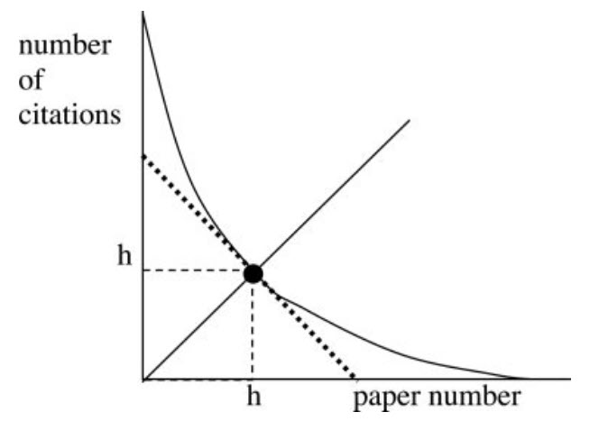

7 Measuring research impact
7.1 Learning objectives
- What is research impact?
- What are the most commonly used citation-based impact indicators?
- What are the limitations of citation-based impact indicators?
7.2 What is research impact
In the previous chapter, we focused on the scholarly publication as a measure of the output or productivity of an individual or group. The research article can then be considered as a knowledge unit, to which the authors of that unit have attached their name. However, for a multitude of reasons, not all publications are created equal. Some may be highly original and significant advances to knowledge in a field or across fields (a single publication may even revolutionize fields) while other may make a smaller contribution. So, while research output may be thought of as the number of units produced, research impact can be thought of as the difference that these units have made, their influence. So how can we measure that?
We have seen in Chapter 2 that being cited by peers is the most basic form of recognition that researchers receive within the reward system of science (Cole and Cole 1973). Citations have been shown to strongly correlate with prestigious awards and other institutionalized forms of recognition and can thus reflect the amount of scientific capital (Bourdieu 1975) that one possesses. As Merton (1968) put it:
“The reference serves both instrumental and symbolic functions in the transmission and enlargement of knowledge. Instrumentally, it tells us of work we may not have known before, some of which may hold further interest for us; symbolically, it registers in the enduring archives the intellectual property of the acknowledged source by providing a pellet of peer recognition of the knowledge claim, accepted or expressly rejected, that was made in that source” (p. 622)
Citations thus have gained acceptance as a measure of scientific excellence and as a tool for research evaluation (Narin 1976).
7.3 Citation-based impact measures
7.3.1 Citation count
The citation count is the most basic (and perhaps most used) indicator of academic impact. It is obtained by counting the number of times that the paper appears in the reference lists of other papers. Its premise is simple the more a publication is cited, the more it has been influential. While the citation count cannot reveal what the nature of this influence might have been, it is considered to indicate, to some degree, the amount of that influence.
Once we obtain the citation count of every article in a set representing a research unit (e.g., a researcher, a journal, an institution), we can then compute the total citations for the set. For example, my Google Scholar profile shows the total number of citations of all my publications combined.
7.3.2 Normalized citation count
Is 37 a high number of citations for a publication? It depends on several factors, mainly the research field, the date of publication, and the type of document.
Different fields or area of research have different epistemic cultures (Knorr Cetina 1991) and scholarly communication practices that can determine the potential number of citations that a publication can receive. This can limit the validity of an assessment based on citation counts alone, especially when this assessment is performed by someone with little knowledge of the field and what might be an excellent, or above-average citation count. Field-normalized indicators take into account field differences in citation rates by comparing the number of citations a paper has received to the citation counts of other papers in the same field.
In Chapter 5, we discussed the classification of research and research outputs and showed that there exists many different classification schemes, and that it can be challenging to determine which field (or fields) a paper belongs to. Consider the implications of that for research evaluation using field-normalized indicators.
Time is an important factor as well since the potential citation count of an article published in 2022 is obviously much lower than the potential citation count of an article published in the same field in 2005.
Editorials, or letters to the editors tend to receive fewer citations than research articles, which tend to receive fewer citations than review articles. Conference proceedings are also often less cited than journal publications. Therefore, it is generally good practice to take into account the document type when normalizing indicators.
Normalized citation counts are usually calculated by simply dividing the citation count of a publication by the average citation count of all publication of the same type, in the same field, and published in the same year.
| Article | Year | Field | Type | Citations | Mean for the same field, year and type | Normalized citations |
|---|---|---|---|---|---|---|
| A | 2017 | Information science | Article | 84 | 72 | 1.167 |
| B | 2017 | Information science | Review | 75 | 79 | 0.950 |
| C | 2017 | Computer Science | Article | 95 | 120 | 0.792 |
| D | 2018 | Information Science | Article | 50 | 50 | 1.000 |
| E | 2019 | Information Science | Article | 40 | 25 | 1.600 |
7.3.2.1 Challenges with normalization
Normalizing indicators is not so easy. It implies that we have an adequate classification of research outputs that does not systematically disadvantage subgroups of publications. For example, classifying information science publications with computer science publications may be problematic because these are different fields with different scholarly communication practices. It also implies that we have consistent metadata on the document type, which is not always the case. Finally, and perhaps most importantly, the calculation of the denominator in the normalization formula requires that we have access to the citation counts of all articles published in the same year, field, and document type (essentially, the entire database is required to calculate the denominators). This is problematic in two ways: 1) access to the entire databases is costly (and thus rare), and 2) the normalized citation scores will depend on the database used (Web of Science, Scopus, Dimensions, OpenAlex, PubMed, etc.).
7.3.3 Highly cited publications (HCP)
Another popular indicator is highly cited publications (HCP). This is a rank-based indicator that is obtained by ranking a set of publications from the same field and year (again, normalization is important), and then setting a threshold to distinguish HCPs from the rest. The 1st, 5th and 10th percentiles are often used as thresholds, but these choices are always arbitrary. Using this approach, we get a dichotomous variable (0 or 1) indicating whether each paper in a set belongs to the HCP group or not, which allows us to calculate the share of publications within the set that are highly cited as a size-independent indicator of impact.
Just like the normalized citations, the identification of HCPs should also take into account the field, publication year and document type. The process thus suffers from the same challenges as citation normalization.
The table below provides an example of what the data could look like. We can see that article A and B are published in the same year and field, but only one is above the HCP threshold and thus considered an HCP. We also see that because the HCP threshold is higher in Computer Science, the 95 citations received by article C are not sufficient to make that paper an HCP. We also see that the threshold varies by year, so paper D and E both have 50 citations but only paper E is an HCP.
| Article | Year | Field | Citation count | HCP threshold | HCP |
|---|---|---|---|---|---|
| A | 2017 | Information science | 84 | 80 | 1 |
| B | 2017 | Information science | 75 | 80 | 0 |
| C | 2017 | Computer Science | 95 | 97 | 0 |
| D | 2018 | Information Science | 50 | 67 | 0 |
| E | 2019 | Information Science | 50 | 45 | 1 |
Once we have determined whether or not each paper meets the HCP threshold, we can calculate the share of HCPs for the set, which in this case would be 40%.
7.3.4 H-index
In 2005, a physicist named Jorge Hirsch introduced a composite indicator that combines the output and impact dimensions of research performance into a single number: the h-index.
The h-index is equal to the number of publications with a citation number greater than or equal to h For instance, a researcher (or another unit) has an h-index of 10 if they published at least 10 articles cited at least 10 times.

As we can see in the conclusion of Hirsch’s paper, he was arguing for the use of his indicator as an unbiased measure of scientific achievement that can be used to compare researchers competing for resources.
In summary, I have proposed an easily computable index, h, which gives an estimate of the importance, significance, and broad impact of a scientist’s cumulative research contributions. I suggest that this index may provide a useful yardstick with which to compare, in an unbiased way, different individuals competing for the same resource when an important evaluation criterion is scientific achievement. (Hirsch 2005)
The h-Index (along with its many variations) has been widely criticized (this blog post covers some of those criticisms) for not accounting for author position in the byline and for field differences. It also undervalues highly influential work since it is bounded by the number of publications, and it is correlated with academic age and with the much simpler total number of citations. Even Hirsch himself recognized the limits of his indicator and the potential adverse effects of its popularity.
Ludo Waltman and Nees Jan van Eck (Waltman and Eck 2011) argued that the h-index can create inconsistencies between single authors considered individually or as a group. For instance, five authors who co-authored the same five papers each cited five teams will have an h-index of 5 when considered individually or as a research unit. However, 5 authors who separately published two papers with 10 citations each will have individual h-indices of 2 and a collective h-index of 10. Waltman and van Eck Waltman and Eck (2011) argue that the share of HCPs is a better indicator since it doesn’t suffer from this limitation: researchers who perform better individually than others will maintain this advantage once aggregated into a unit.
7.3.5 The journal impact factor
The Journal Impact Factor is a citation-based indicator designed to evaluate the relative influence of a journal. It is quite simply the average number of citations received during a given year by the articles published in the journal over the two previous years:
\[ JIF_y = \dfrac{Citations_y}{Publications_{y-1} + Publications_{y-2}} \]
So the 2017 JIF for the journal X would be calculated by counting all citations received in 2017 by the articles published in the journal in 2015 and 2016 and dividing this citation count by the number of articles published in the journal for 2015 and 2016. Because citations take llonger to accumulate in the social sciences and humanities, a variant of the JIF that uses a five-year citation window rather than a two-year one was eventually introduced.
The term Journal Impact Factor is a trademark of Clarivate Analytics (the company that owns the Web of Science). Other similar indicators have been proposed such as the CiteScore, and the Source Normalized Impact per Paper (SNIP) and the Scimago Journal Ranking (SJR) used by Elsevier.
As we know, accumulating citations take time, which means that it is difficult to determine early on whether a piece of research is a “significant contribution” to science or not. Partly because they are immediately available, the JIF or other journal indicators or rankings are commonly used in the evaluation process. Such practices have, however, been widely criticized and using the journal as a proxy for the importance of a single publication is often considered a misuse of these journal indicators (some of these criticisms can be found in Larivière and Sugimoto (2019)).
7.4 Limits of citation-based indicators
7.4.1 Diversity in citation practices
An important factor that is not always at the forefront of discussions around citation-based indicators and research evaluation is the fact that a paper doesn’t just get cited by virtue of existing or based on its intrinsic characteristics; it is cited because another researcher referred to it in their own work. We might then ask: why do researchers cite other works?
There are two dominant theories of citation behaviour: the normative and the socio-constructivist theories. The normative view suggests that researchers mainly cite in order to acknowledge the work of their peers and predecessors and give credit where credit is due. It is the Mertonian view that was mentioned at the beginning of this chapter which supports the use of citations for evaluative purposes. The socio-constructivist view focuses on citations as a rhetorical device that is not meant to acknowledge, but rather to convince. It emphasizes the strategic and biased nature of citation choices. For instance, one might omit to cite sources that don’t align with their findings or arguments, or cite work of little relevance by prestigious scholars at the expense of more relevant work by less known scholars.
Bornmann and Daniel (2008) performed a review of studies that sought to empirically test those two theories. Their review suggests that reasons for citing are mixed and partly support both views, although support for the normative theory is stronger. They do however suggest that this is mostly true at higher level of aggregation (e.g., researchers with substantial publication records, research units, institutions).
This leads us to a second main limit of citation-based impact indicators: their limited reliability when working with small datasets (e.g., individual papers or researchers). This is partly due to the ambiguities surrounding the concept of impact and what citations are actually supposed to measure, and by the general concept of statistical power according to which small sample sizes increase the likelihood of failing to reject a null hypothesis.
Finally, one of the most important limits of citation-based indicators is that they fail to account for other forms of impact. Indeed, citations are often seen to measure relatively accurately the academic impact of a publication or research unit, that is the contribution of theoretical or methodological advances to the field. However, the impact of academic research is not limited to the scientific realm. Research can also lead to economic development (economic impact), fuel technological innovation (technological impact), and have impact on policy, on public health, on the environment and on culture and society at large. In the next chapter, we will discuss “Altmetrics” (alternative metrics), which are a range of bibliometric indicators that seek to measure the impact of a publication outside of scholarly communication system. Could those new metrics succeed in measuring the social impact of research? We shall see.
7.5 Conclusion
In this chapter, we introduced some of the most commonly used citation-based indicators of research impact and their calculation. While a large number of empirical studies have demonstrated a correlation between citations and the not always clearly defined concept that they claim to measure, caution remains necessary when using citations for evaluation purposes. Over the years, the research community published several declarations and manifestos that emphasize the challenges of quantitative research evaluation processes and propose best practices; the Leiden Manifesto and the San Francisco Declaration on Research Assessment (DORA) are good examples.